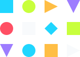
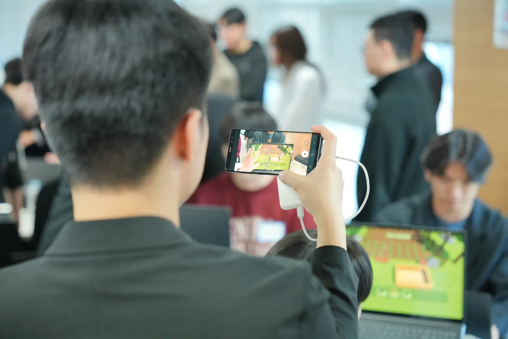

AI-NATIVE GAME DEVELOPMENT FESTIVAL
AI Game Dev Arena
From Player to Developer
AI 도구와 Unity 기반 워크플로우로 제한 시간 안에 플레이 가능한 게임을 만드는 라이브 개발 아레나. 파트너에게는 실제 유즈케이스를, 참가자에게는 새로운 포트폴리오 무대를 만듭니다.
- 5.5h
- Live build sprint
- Unity
- Playable prototypes
- Season 0
- Proof of format
WHAT THIS IS
게임잼을 넘어, AI 시대의 제작 방식을 보여주는 무대.
AI Game Dev Arena는 개발자, 디자이너, 기획자, 학생, 인디 창작자가 AI 툴을 활용해 짧은 시간 안에 플레이 가능한 게임을 제작하는 라이브 챌린지입니다.
파트너에게는 실제 개발 현장의 툴 사용 인사이트를, 참가자에게는 커리어와 포트폴리오가 되는 쇼케이스 경험을 제공합니다.
SEASON 0 PROOF
Season 0가 다음 아레나의 출발점입니다.
2026년 5월 1일, 참가자들은 제한 시간 안에 Unity 기반의 플레이 가능한 게임을 만들었고 그 과정과 결과는 영상과 쇼케이스로 남았습니다.
WINNING PROTOTYPES
5시간 안에 나온 플레이 가능한 게임들.
짧은 제작 시간 안에서도 게임으로 작동하는 아이디어가 나올 수 있다는 것을 실제 결과물로 보여줍니다.
PROGRAM FORMAT
사전 온보딩부터 쇼케이스까지 하나의 제작 루프.
참가자는 AI 도구를 실제 제작에 적용하고, 파트너는 그 과정과 결과를 현장에서 확인할 수 있습니다.
FOR PARTNERS
브랜드 노출과 실제 제작 경험을 함께 만듭니다.
AI 솔루션사, 게임사, 퍼블리셔, VC, 교육기관, 미디어 파트너가 개발자와 자연스럽게 만나는 접점을 설계합니다.
FOR PARTICIPANTS
AI와 함께 게임을 끝까지 만들어볼 사람을 기다립니다.
개발자, 디자이너, 아티스트, 기획자, 학생, 인디 창작자 모두에게 열리는 AI-native 제작 실험장입니다. 다음 시즌 정보가 확정되면 가장 먼저 안내합니다.
Join participant waitlist
MEDIA & COMMUNITY
Season 0를 함께 본 사람들.
개발자 커뮤니티와 게임 미디어 채널을 통해 Season 0의 현장과 결과물이 소개되었습니다.
FAQ
자주 묻는 질문.
NEXT SEASON
파트너 미팅과 참가 관심 등록을 열어둡니다.
AI Game Dev Arena의 다음 시즌을 함께 만들 파트너, 스폰서, 멘토, 심사위원, 미디어 파트너, 참가자를 찾고 있습니다.